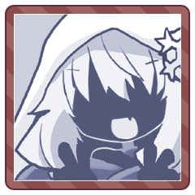
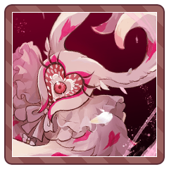

GM
きみたちはこの村に立ち寄り、一宿のついでに、村の周囲に居ついた取るに足らない亡者を軽くあしらい、村を発った。
＊＊
胸がどきどきどきどきしていて、おさえていないと口から心臓がでちゃいそう。
＊＊
時計街の白兎が言ってた。
白兎は、まるで一目惚れのように、運命の救世主に気づくこともあるんだよって。
＊＊
ぴんときて、わかっちゃったの。
あたしにほほえんでくれるのは、あたしの名前を呼んでくれるのは、あの人に違いないんだわ。
＊＊
このまま何もしなければ、運命の救世主は過ぎ去っていく。
もう出会うこともないかもしれない。
＊＊
（馬車を途中で降りて、迷子のフリをしよう。きっと村まで連れて行ってくださるはず）
＊＊
（そうしたら、お礼をするために家へ招待するの。あの方の心を掴む、とっておきの自己紹介を考えなきゃ――）
＊＊
白兎がアリスを追いかけるなんておかしいと思う？
＊＊
あたしはあたしの手で、この運命を切り開くと決めたんだから。
GM
恋は盲目、はじめていきます。
よろしくお願いします！
GM
今回は、ゆきなちゃんの行動の前に……ラビングラビットが割り込んで行動します。
GM
狙う対象は……これまで順番に、一人ずつ狙っておりましたので、お分かりかと思いますが。
GM
ノエルくんですね。
先ほどの襲撃の夜ということにしましょう。
GM
今はもう、リリアンちゃんも落ち着いたのでしょう。時間を決めて、一人ずつ見張り番をしながら夜を過ごします。
GM
そして、一番最初に番をすることになったノエルくんがその役目を終え、眠りについたとき。
GM
きみは強い意志で、リリアンに「帰ろう」と、何度も訴えた。
ノエル
その数日で、すっかり懐かしい景色になってしまった。
GM
この小さな世界に、あの父はいない。
恐ろしい亡者だっていない。
GM
けれど……
きみの目は、ひとつの違和をとらえます。
GM
並んだ人形の中に、作った覚えのない子が混じっている。

お人形
……こんなきれいな子を見せてきたことはなかった。
お人形
この館のほかのどの人形よりも、ずっと美しい。
ノエル
その人形が、見知った顔であることの、驚き。
GM
彼女がほんとうに、永遠に人形と化してしまえば。
ノエル
その細い首を絞めて、息の根をとめてしまえば。
ノエル
ゆきなへ近づき、ゆっくり、ゆっくりと…その首へと手を伸ばす。
GM
大きな館は、小さな空き家に。
お人形は、ゆきなそのものに。
GM
きみは、その狂おしい気持ちから。
夢と現の境に気づけぬまま。
GM
といったところで、抉りますけれど……横槍はありますか？
[ ラビングラビット ] HP : 63 → 62
ノエル
choice[リリアン,ゆきな] (choice[リリアン,ゆきな])
＞ リリアン
GM
横槍ですね～HPを1減らして能力を決めましょう！
[ リリアン ] HP : 17 → 16
リリアン
Choice[猟奇,才覚,愛] (choice[猟奇,才覚,愛])
＞ 才覚
リリアン
2d6>=7 (2D6>=7) ＞
6[5,1] ＞ 6 ＞ 失敗
GM
今日、いろいろありましたからね。ちょっと気づく余裕がなかったですね。 [編集済]
リリアン
リリアンは空き家の外で見張りを頑張っていました……
GM
では、ラビングラビットはあふれる愛で判定します。
GM
2d+3>=7 (2D6+3>=7) ＞
5[1,4]+3 ＞ 8 ＞ 成功
GM
成功。では、ピグマリオンコンプレックスは○から空白に戻ります。
ゆきな
「―――ぅ」 絞める首の先から、漏れる声。
ノエル
「…綺麗だよ、ゆきな。すごく、綺麗。……僕の…人形に…」
ゆきな
じたばたともがく手足。真っ白なそれは、まるで、人形のようで。
ノエル
綺麗だな。かわいいな。少しずつ、少しずつ…人形になっていく、きみは…
ゆきな
手を伸ばす。あなたの手に重なる。……それは人形のように、真っ白で、体温も無くて。 [編集済]
ノエル
重なる冷たい手がとても愛おしい。声が聞こえた気がしたけれど、きっともうすぐ、それもなくなる
ノエル
きみのいのちが消えていくほど、より愛しさから力がこもる。
ゆきな
あなたの愛しさが注がれるほどに、声が細く、手足はちからなく……
ノエル
「…大丈夫だよ、ゆきな。きみは…僕の人形になる。幸せにするよ…ずっと大事に…愛してあげるから」
ゆきな
最後の呼吸とともに、身体の力がぬけていく……
リリアン
ゆきなの呼吸が止まるその寸前、 [編集済]
リリアン
リリアンが、ゆきなからノエルを引き剥がす。
ノエル
無理やり引きはがされれば、ハッとしたように周囲を見渡す。
リリアン
見張りの交代をと中に入ったリリアンが目にしたのは、
リリアン
恍惚の表情で、ゆきなの首に手をかけるノエルの姿。
ノエル
違う、とも言えない。だって、僕は…本気で…
リリアン
問い詰めず、縋るような目でノエルを見る。
ゆきな
「………。」
ぼんやりとした頭で、ふたりの様子をながめていた。
ゆきな
何故だろう。いま生きていることが
ざんねんなような、このきもち……。
ノエル
ゆきなの様子を、どこかぼうっとした顔で見つめる。
ゆきな
「……あっ！えへへ！ら、らいじょうぶ～！」
リリアン
「ろれつが回ってませんよ……」 [編集済]
ゆきな
「だ、だいじょぶ。なんかね……ゆきなも……」
ゆきな
「このまま人形になっちゃっても……いいかなって、ちょっと思っちゃってぇ……」
ゆきな
その場の空気を和ませるようとしてるのか、いつものにこにこ顔に。
ノエル
「……その。ごめん…ね。夢を……見てた、気がして。…なんか、僕もおかしくなってた…みたい」
リリアン
ゆきなの首を絞めながら、ノエルはそう言っていた。
ゆきな
「いいよいいよぉ！ゆきなもへんな夢みたしぃ…！」
ノエル
本当はおかしくなんてない。それは、いまだ高鳴るこの胸の鼓動が、いやでも教えてくれる。
リリアン
それを聞いたから止めに入ったわけではない。
リリアン
動機には関係なく……あんなことは、止めなくてはならなくて。
リリアン
誰にともなく、心の内で言い訳をしてしまう。
リリアン
それ自体が、そこに感情があったことの証左なのに。
ゆきな
「………。」明るくふるまって見せても、胸は高鳴ったままだった。
GM
……ここでは、みんながみんな、恋の病に蝕まれている。
GM
さて、では翌日としましょうか。
最後のゆきなちゃんの手番です。
ゆきな
どうしようかな……リリアンちゃん舐めにいくか、ノエルくん舐めにいくか
ゆきな
6：廃教会。今は誰にも使われておらず、何が信仰されていたのかは分からない。
ゆきな
こことか、リリアンちゃんとゆっくり話せそうかな？
GM
人気のない教会までやってきたことにしましょう。ノエルくんは休ませてるかんじかな？
ゆきな
あ、ノエルくん教会内にいっしょにいるほうが自然かもですね！
ゆきな
「ふよふよ～ あっ、ここ、しずかかも～！」 [編集済]
リリアン
ゆきなとは違う長椅子。だけど会話できる程度には近く。
ゆきな
「みんな元気ないよ～！もっと声だしてこぉ～！」
ノエル
元気そうなゆきなの様子に、昨晩のことをぼんやり思い出す。
ゆきな
「いえ～い！元気にしてると元気になるよぉ！」
ゆきな
「……そういえばノエノエ、きのうどんな夢みてたの？」
ノエル
思い出そうと思えば、鮮明に思い出せる。けど…
リリアン
聞けなくて良かったような、残念なような……。
ノエル
「ほ、ほら…元気出していなかきゃ…なんだろ。昨日のは…悪い夢だったんだ…だから…うん…」
ゆきな
「なんか、ゆきなのこと……綺麗、とか。幸せにする……とか。」
ゆきな
………。おもいだしたらちょっと溶けそうだ。
ノエル
「……だっ、だから…さ、違うんだって！僕がゆきなにそんなこという訳ないだろ！」
ノエル
「悪い夢！あのうさぎの亡者の力か何かのせい！！」
ゆきな
「まぼろし……」自分の時を思い出す。溶けてしまう雪女と、リリアンの幻。 [編集済]
リリアン
「……ゆきなさんは、どうだったんですか」
リリアン
「ゆきなさんも夢を見たって言ってませんでしたか？」
ゆきな
「みたけどぉ……いうのははずかしぃ……」リリアンをみつめながら
ゆきな
「そうなんだ～…？」 ノエルのほうをちらり。
ゆきな
「ええ～ ふたりの夢、気になったのにぃ～っ」
ゆきな
「リリっち、強くてかっこいいしぃ……夢なんて、見ないのかな～」
リリアン
「かっこいい……かはともかく、それは夢を見るかとは関係ないのでは……？」
リリアン
「まあ少なくとも昨晩は見なかったことは確かですが……」
ゆきな
「夢ってぇ、こうなったらいいな～とか。そういうのが見せるやつじゃないの？」
リリアン
「こうなったらいい、という夢もありますし」 [編集済]
ノエル
よっぽど夢のことが気になるんだな…とゆきなを見る。
ゆきな
「なんでぇ～！？ゆきな、もっとふたりのこと知りたいのに～！」
ノエル
「だったら別に夢のことじゃなくても……、え？」
ノエル
「僕は……別に。面白くない夢…ばっかだよ」
ゆきな
「おもしろくない夢…… 悪夢ってことー？」
リリアン
実のところ、ノエルの話はリリアンも気になる。
リリアン
これは決して深い意味があるわけではなく……
リリアン
愛してあげる、リリアンが聞いたのはその一言だけど。
リリアン
あれはきっと心からの言葉だったんだろう。
ゆきな
「へへへ～。こわい夢なんてとんでけ～っ。」なでなで
リリアン
彼女は……ノエルの人形になってもいいかも、と
リリアン
今もああして、隣に座って彼に触れている。
ノエル
黙って撫でられる。嫌ではない。むしろ…嬉しいような。
リリアン
ゆきなは楽しそうで、ノエルも喜んでいるように見える。
リリアン
自分一人だけ、こうして違う椅子に座って、
GM
横槍できるのはノエルくんだけですね。どうします？
ノエル
横やり……………しません………（ごめんね…）
ゆきな
2d+3>=7 こわいよ～～！！！ (2D6+3>=7) ＞
9[6,3]+3 ＞ 12 ＞ 成功
リリアン
じゃれ合う二人の横顔を、後ろからぼんやりと眺めている。
リリアン
ノエルに触れる仕草にも向ける笑顔にも、一切の屈託がない。
リリアン
自分も彼女のように美しく産まれていれば。
リリアン
無意識の内に抱えていた羨望を、ふと強烈に自覚してしまう。
リリアン
美しさが、奔放さが、笑顔の輝かしさが……
リリアン
今よりもっと近くで、もしも叶うなら自分に向けて……。
リリアン
……今まで友人と呼べる相手もロクにいなかったからだろうか。
GM
またひとつ。
普段なら蕾のまま押し込めていたはずの想いが、恋の毒によって花開く。
GM
満たされていたはずなのに、今はもう物足りない。
ゆきな
いま、その笑顔が向いている先は、あなたではなく。
GM
満たされない想いは「恋心」となり、またひとつ、きみの中に住み着きます。
[ リリアン ] 挫折 : 1 → 0
GM
……本当はひとつだけ繋がっているのに、きみたちはすれ違い、互いに見出すことができないでいる。
GM
いつかそれに気づくでしょうか。
いつか満たされるときがくるのでしょうか。

ラビングラビット
――ラビングラビットは、全力を以て拒絶する。
ラビングラビット
「―――！！」
声はない。代わりに漂う桃色の靄。
ラビングラビット
地団駄を踏みながら、きみたちの前に立ちはだかる。
ラビングラビット
その視線の先は、やはり一人だけ。
ラビングラビット
アリスを追いかける白兎なんていないし、
亡者と結ばれる人間だっていない。
リリアン
あなたがあの日見た、亡者に向けていたのと同じ矢が
ラビングラビット
愛するものが、自分を見てくれる手段は、ただこれだけ。
ラビングラビット
殺して亡者にしてしまうことだけ！
ゆきな
「ええ～～これ戦うながれ～～！？やだぁ～～！！」
リリアン
「……村の外は危険と分かっていたはずです」
リリアン
「応える方法がこれしかないのは残念です！」
[ リリアン ] 水パイプ : 0 → 1
GM
問題なければ、このまま行動順を決定していきましょう。
GM
では、リリアンちゃんとゆきなちゃんは+2の修正をつけてどうぞ！
基本は1D6+才覚です。
リリアン
1d6+2 いい時計ですね (1D6+2) ＞
5[5]+2 ＞ 7
ゆきな
1d6+3+2 時計きらーん！ (1D6+3+2) ＞
1[1]+3+2 ＞ 6
ラビングラビット
1d6 愛しかないので1d6だけです (1D6) ＞
5
GM
では、リリアン＞ゆきな＞ラビングラビット＞ノエル、の順ですね
[編集済]
GM
イカサマの「トランプ兵」を持っているので、６枚引きます。
GM
今めちゃくちゃ焦ってスート確認しにいっちゃった
GM
たまにこれで素でそろう人がいるんですよね ふ～～～～
GM
ちなみにスート（ノエルくんならハート）でそろっていたら切り札が配布されてました
GM
リリアン：ハート4 ハート5 ダイヤ6 スペード9 ダイヤK
GM
ゆきな：スペード3 スペード6 ダイヤ7 スペードQ クラブK
GM
ノエル：クラブ4 クラブ5 クラブ6 クラブ7 クラブ9
GM
ラビングラビット：スペード4 スペード8 スペード10 ハート8 ハートJ スペードK